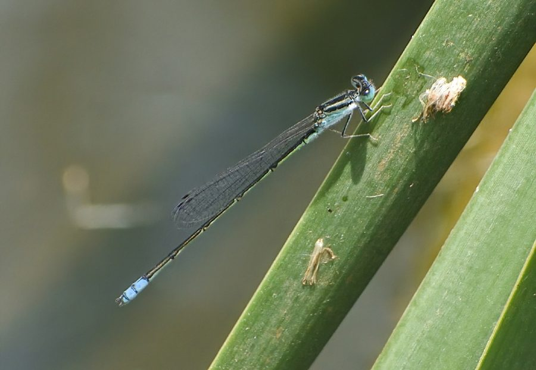

स्पेंसेज डार्टलेट व्याध पतंगSpence's Dartlet
Pseudagrion spencei · Coenagrionidae · INS-0201

- Scientific name वैज्ञानिक नाम
- Pseudagrion spencei Fraser, 1922
- Family कुल
- Coenagrionidae
- Hindi हिंदी
- स्पेंसेज डार्टलेट व्याध पतंग
- Local names स्थानीय नाम
- spences dartlet, spence's dartlet, dartlet damselfly, neeli vyadh patang
- Status here यहाँ की स्थिति
- native
- Movement आवागमन
- Resident, here all year
- Known from कहाँ दर्ज
- Others have published records from the Basti–Ayodhya districts बस्ती–अयोध्या के ज़िलों से दूसरों के प्रकाशित अभिलेख
- IUCN IUCN
- not evaluated
- Review समीक्षा
- not yet reviewed
When to look कब देखें
Present all year. साल भर मौजूद।
Uses and possibilities उपयोग और संभावनाएँ
Drawn from the documented uses in the profile below, where each is labelled traditional, current or a research lead. All uses →
Tell it apart from इनसे अलग पहचानें
स्पेंसेज डार्टलेट व्याध पतंग / Spence's Dartlet
Pseudagrion spencei Fraser, 1922 — Coenagrionidae
स्पेंसेज डार्टलेट व्याध पतंग — धीमी गति से बहने वाली नहरों, नालों और दलदली तालाबों के किनारे पाई जाने वाली एक छोटी, नीले और काले रंग की डैमसेल्फ़्लाई है। इसके नर का सीना और पूँछ का अंतिम भाग चमकीले आसमानी नीले रंग का होता है जिस पर काली धारियाँ होती हैं। यह पानी के ऊपर तैरती घासों और पौधों पर बैठकर धूप सेकती है और हवा में उड़ने वाले छोटे मच्छरों का शिकार करती है।
Quick Identification त्वरित पहचान
| Feature | Description |
|---|---|
| Size | Small, slender damselfly; abdomen 24–26 mm, hindwing 15–17 mm (Subramanian 2005) |
| Male Thorax | Pale azure-blue or greenish-blue with a broad black mid-dorsal stripe (Fraser 1933) |
| Antehumeral Stripes | Broad, complete azure-blue antehumeral stripes bordered with black (Subramanian 2005) |
| Abdomen Pattern | Blue marked with bronze-black dorsal spots; segments 8 and 9 entirely bright blue (Fraser 1933) |
| Postocular Spots | Large, triangular pale blue spots linked by a narrow blue occipital line (Fraser 1933) |
| Female Colour | Pale olivaceous-green or yellowish-brown with extensive bronze-black markings (Subramanian 2005) |
| Pterostigma | Small, diamond-shaped, dark reddish-brown framed in pale yellow (Fraser 1933) |
Field tip: Look along sunny, vegetated canal banks and sluggish streams. Males perch low on horizontal grass blades or water-chestnut leaves; the combination of large blue postocular spots, azure-blue thoracic stripes, and bright blue terminal abdominal segments 8 and 9 distinguishes this species.
हिंदी: नहरों और तालाबों के किनारे धूप सेकती इस छोटी नीली पतंग के सिर के पीछे नीले त्रिकोणीय धब्बे होते हैं और पूँछ के अंतिम दो खंड चमकीले नीले होते हैं।
Morphology आकारिकी
Measurements as given in the handbooks (Subramanian 2005; Fraser 1933):
| Measurement | Range | Source |
|---|---|---|
| Abdomen length | 24–26 mm | Subramanian (2005) |
| Hindwing length | 15–17 mm | Subramanian (2005) |
Adult description:
Pseudagrion spencei is a delicate, slender-bodied coenagrionid displaying moderate sexual dimorphism (Fraser 1933). In mature males, the head has a velvety black vertex bearing large, triangular, bright azure-blue postocular spots connected across the occiput by a fine blue transverse bar (Fraser 1922). The frons and clypeus are pale azure-blue, while the eyes are dark blue above and olive-green below (Subramanian 2005). The synthorax is bright azure-blue on the dorsum, bisected by a moderately broad black mid-dorsal carina and bordered laterally by narrow black humeral stripes (Fraser 1933).
The male abdomen is slender and predominantly blue marked with bronze-black: segment 1 is blue with a black basal patch; segment 2 carries a distinctive black thistle-shaped dorsal marking; segments 3 to 7 are black dorsally with narrow blue basal rings; segments 8 and 9 are entirely azure-blue, unmarked with black; and segment 10 is black above and blue laterally (Fraser 1933). The superior anal appendages are black, shorter than segment 10, and notched at the apex (Fraser 1922).
Females are slightly stouter, with a yellowish-green or brownish ground colour (Fraser 1933). The thoracic stripes are greenish-yellow, and the abdomen carries a broad, continuous bronze-black dorsal stripe running from segment 1 through 9 (Subramanian 2005). In both sexes, the wings are narrow, petiolated, and completely transparent, with dark reddish-brown pterostigmata (Fraser 1933).
Larval Stage निम्फ अवस्था
The aquatic naiad is slender, pale olive-green or translucent greenish-brown, clinging tightly to submerged stems of Hydrilla verticillata (Hydrilla). The caudal gills are elongate, oblanceolate, rounded apically, and marked with faint dark spots along the tracheal branches.
हिंदी: नर का पेट 24 से 26 मिमी लंबा होता है। इसका सीना नीला और काला होता है और पूँछ के 8वें और 9वें खंड पूरी तरह चमकीले नीले होते हैं। मादा हल्के हरे-भूरे रंग की होती है।
Behaviour & Ecology व्यवहार और पारिस्थितिकी
Spence's Dartlet is an adaptable damselfly of slow-flowing and standing freshwaters across the northern plains (Subramanian 2005). It frequents sunny edges of irrigation canals, sluggish agricultural rivulets, perennial village ponds, and oxbow lakes with abundant submerged and floating vegetation (Fraser 1933). Its flight is low, direct, and agile, skimming over the water surface to pluck small flying insects from the air.
Males establish small perching territories on floating leaves of Trapa bispinosa (Water Chestnut) or horizontal emergent twigs. They vigorously chase rival males while ignoring larger dragonflies passing overhead. Mating pairs form tandem wheel formations on vegetation bordering the water. Oviposition takes place in tandem: the male grips the female by her prothorax while she submerges her abdomen to insert eggs into aquatic plant tissues.
हिंदी: यह पतंग पानी के ऊपर बहुत तेजी से उड़ती है और तैरती पत्तियों पर बैठकर अपने क्षेत्र की रखवाली करती है। नर और मादा जोड़ी बनाकर पानी के पौधों में अंडे देते हैं।
Life Cycle / Phenology जीवन चक्र
Seasonal phenology in northern Indian alluvial wetlands across the agricultural year (Fraser 1933; Subramanian 2005):
| Season / Month | Stage | Field Observation |
|---|---|---|
| July–September (Kharif monsoon) | Adult peak & breeding | Abundant emergence; tandem pairs ovipositing in flooded canals (Subramanian 2005) |
| October–November (Post-monsoon) | High adult activity | Adults frequenting receding lake edges and weed beds |
| December–January (Rabi winter) | Naiad development | Aquatic nymphs overwinter among submerged weeds |
| February–April (Spring / Zaid) | Adult emergence | Spring brood active along sunny perennial irrigation drains (Fraser 1933) |
| May–June (Pre-monsoon summer) | Perennial refuge | Restricted to perennial flowing canals and deep village tanks (Subramanian 2005) |
The female uses her sharp ovipositor to deposit eggs inside the submerged stems of aquatic plants like Hydrilla verticillata (Hydrilla) and Ipomoea aquatica (Water Spinach). The eggs hatch after a few days. The predatory naiads feed actively on small invertebrates, developing through multiple instars over a few weeks before crawling onto emergent vegetation to emerge as adults. Multiple generations overlap during the warm season.
हिंदी: मादा पानी के अंदर पौधों में अंडे देती है। कुछ दिनों में अंडे फूटकर निम्फ बनते हैं और कुछ हफ्तों बाद पानी से बाहर आकर वयस्क पतंग में बदल जाते हैं।
Host Plants or Prey आहार
Pseudagrion spencei is a carnivorous predator throughout its life stages (Subramanian 2005):
Adult diet:
- Adult disease vectors, including Culex tritaeniorhynchus (Rice-field Mosquito) and Culex quinquefasciatus (Southern House Mosquito).
- Small agricultural pests of paddy, including Nilaparvata lugens (Brown Planthopper) and Nephotettix virescens (Green Leafhopper).
- Non-biting midges (Chironomidae), tiny flies, and small wetland moths.
Larval diet:
- Mosquito wrigglers, midge bloodworms, small mayfly nymphs, and microscopic aquatic crustaceans.
हिंदी: यह कीट मच्छरों और धान के हानिकारक फुदकों को पकड़कर खाता है। पानी के अंदर इसका निम्फ मच्छरों के लार्वा को नष्ट करता है।
Predators / Natural Enemies शत्रु
Natural predators documented in Gangetic plain freshwater ecosystems:
- Spiders: Long-jawed orb-weavers (Tetragnatha) spin webs across canal vegetation that trap flying adults.
- Predatory dragonflies: Larger anisopterans like Crocothemis servilia (Scarlet Skimmer) and Orthetrum sabina (Slender Skimmer) pursue adults over water.
- Amphibians: Green frogs and skipper frogs (Euphlyctis cyanophlyctis Skittering Frog) ambush perching dartlets.
- Fish: Small freshwater fishes feed on developing naiads in submerged weed beds.
हिंदी: पानी की मकड़ियाँ, बड़ी व्याध पतंगें और मेंढक इस छोटी नीली पतंग का शिकार करते हैं। मछलियाँ पानी के अंदर इसके लार्वा को खाती हैं।
Agricultural / Human Relevance कृषि प्रासंगिकता
Agroecological benefits: Pseudagrion spencei is a beneficial insect in rural canal networks and irrigated farming tracts of eastern Uttar Pradesh (Subramanian 2005). Adults forage along paddy bunds and field drains, consuming significant numbers of leafhoppers, planthoppers, and vector mosquitoes.
Waterway biological monitoring: Because Pseudagrion damselflies are sensitive to excessive organic pollution and heavy pesticide loads, healthy populations indicate relatively clean, well-oxygenated aquatic habitats (Subramanian 2005).
Traditional: No traditional uses are known.
Today: Valued by aquatic biologists as an indicator of flowing freshwater quality.
Research direction (a lead, not a result): Assessing the effect of canal lining with concrete on Pseudagrion oviposition site availability.
हिंदी: यह कीट नहरों और धान के खेतों में फसल को नुकसान पहुँचाने वाले कीटों को खाकर लाभ पहुँचाता है। इसका दिखना पानी के स्वच्छ होने का प्रमाण है।
Expected Locally स्थानीय रूप से अपेक्षित
Not a field record. Written from published accounts for eastern Uttar Pradesh. No confirmed local sighting yet — if you have seen it, that is what the atlas needs.
अभी तक स्थानीय पुष्टि नहीं। यह विवरण प्रकाशित स्रोतों से है, किसी अवलोकन से नहीं।
Spence's Dartlet is expected across eastern Uttar Pradesh along slow-flowing irrigation canals, perennial village tanks, and oxbow lake edges containing floating water chestnut and hydrilla. Look along sunny, vegetated shorelines on warm mornings from July through November. GBIF holds published records from these districts. A photograph showing the blue thoracic stripes and blue terminal abdomen, submitted through the About page, would confirm the first local documentation for the district.
Distribution वितरण
Global range: Confined to South Asia, occurring widely across India, Pakistan, Nepal, and Bangladesh (Fraser 1933).
In India: Recorded across the northern alluvial plains, Punjab, Uttar Pradesh, Bihar, West Bengal, Assam, and central India (Prasad & Varshney 1995; Mitra 2002).
In Uttar Pradesh: Recorded from canal systems, riverine oxbows, and rural wetlands throughout the central and eastern plains.
In Basti district / eastern UP: Expected as a resident breeding species in irrigation canals, perennial tanks, and riverine floodplains.
हिंदी: यह भारत और पड़ोसी देशों के मैदानी भागों में पाई जाती है। उत्तर प्रदेश की नहरों और ग्रामीण तालाबों में इसका वास सामान्य है।
Research Questions शोध प्रश्न
- How do water velocity variations in irrigation canals influence Pseudagrion spencei territory establishment? / नहरों में पानी की गति का इस कीट के बैठने पर क्या असर होता है?
- What is the daily consumption rate of Pseudagrion spencei on brown planthopper adults in canal-irrigated rice?
- How do artificial concrete embankments on rural canals affect the availability of natural oviposition substrates? / नहरों के पक्कीकरण से इस कीट पर क्या प्रभाव पड़ता है?
- What visual cues allow females to distinguish Pseudagrion spencei from co-occurring Pseudagrion rubriceps males?
- Can local village school nature watches document seasonal emergence peaks using simple shoreline transect walks?
Similar Species मिलती-जुलती प्रजातियाँ
| Species | How to tell apart | हिंदी | |
|---|---|---|---|
| Pseudagrion rubriceps ([[saffron_faced_blue_dart\ | Saffron-faced Blue Dart]]) | Bright golden-orange or olive-red face and green thorax; lacks azure-blue face and thorax | सैफ़्रन-फ़ेस्ड ब्लू डार्ट — नारंगी चेहरा |
| Pseudagrion decorum ([[three_lined_dart\ | Three-lined Dart]]) | Pale sea-green thorax; abdomen segments 8 to 10 pale blue with distinctive arrow-shaped markings | थ्री-लाइन्ड डार्ट — हल्का हरा-नीला रंग |
| Ceriagrion coromandelianum ([[coromandel_marsh_dart\ | Coromandel Marsh Dart]]) | Entire body bright citron-yellow; entirely lacks blue and black colouration | कोरोमंडल मार्श डार्ट — पूरा शरीर पीला |
Field rule: A small blue-and-black damselfly of slow canals whose male has large triangular blue postocular spots, azure-blue thoracic stripes, and completely bright blue abdominal segments 8 and 9 is Spence's Dartlet.
हिंदी: सैफ़्रन-फ़ेस्ड ब्लू डार्ट का चेहरा नारंगी होता है और कोरोमंडल मार्श डार्ट पीली होती है, जबकि स्पेंसेज डार्टलेट का सीना और पूँछ का सिरा पूरी तरह नीला होता है।
Taxonomy & Classification वर्गीकरण
Original description. Described by Frederick C. Fraser in 1922 as Pseudagrion spencei in Memoirs of the Department of Agriculture in India (Entomological Series), 7(7), page 47. Type locality: "Pusa, Bihar" (India).
Subspecies. Monotypic — no subspecies are recognized across its South Asian range.
Family and order placement. Order Odonata, suborder Zygoptera, family Coenagrionidae. The genus Pseudagrion Selys, 1876, comprises the river damselflies, distinguished by prominent postocular spots and specific wing venation patterns.
Phylogenetic notes. Pseudagrion spencei is closely related to P. decorum and P. microcephalum, separated by its bold azure-blue thoracic markings and unique bifurcated male cerci (Subramanian 2005).
IUCN status rationale. Not evaluated (NE) on the global IUCN Red List of Threatened Species. It is an abundant and secure native species inhabiting widespread freshwater systems across the northern plains.
हिंदी: इसका वैज्ञानिक नाम Pseudagrion spencei है और यह Coenagrionidae परिवार की सदस्य है। प्रकृति में इसका वास पूरी तरह सुरक्षित है।
Photo Gallery फोटो गैलरी
No photos yet — add field photos to media/species/spences_dartlet/ and run node scripts/sync_photos.js.
Photos needed आवश्यक फोटो
- [ ] Adult male perched on canal vegetation showing blue thoracic markings (नीले सीने वाला नर पौधे पर)
- [ ] Adult female showing dull olivaceous ground colour (मादा की शारीरिक बनावट)
- [ ] Tandem mating pair on floating weed leaf (तैरते पत्ते पर प्रजनन करती जोड़ी)
- [ ] Aquatic nymph clinging to submerged weed stem (जलीय पौधे के तने पर निम्फ)
References संदर्भ
- Fraser, F. C. (1922). New and rare Indian Odonata in the Pusa collection. Memoirs of the Department of Agriculture in India (Entomological Series), 7(7): 39–77 [p. 47].
- Fraser, F. C. (1933). The Fauna of British India, Including Ceylon and Burma. Odonata, Vol. 1. Taylor and Francis, London, pp. 292–294.
- Subramanian, K. A. (2005). Dragonflies and Damselflies of Peninsular India — A Field Guide. E-book of Project Lifescape, Centre for Ecological Sciences, Indian Institute of Science and Indian Academy of Sciences, Bangalore, p. 74.
- Prasad, M. & Varshney, R. K. (1995). A check-list of the Odonata of India including data on larval studies. Oriental Insects, 29(1): 385–428.
- Mitra, T. R. (2002). Geographical distribution of Odonata (Insecta) of Eastern India. Memoirs of the Zoological Survey of India, 19(1): 1–208.
- GBIF Occurrence Data — Pseudagrion spencei, India (2025).
Source file: species/fauna/insects/spences_dartlet.md